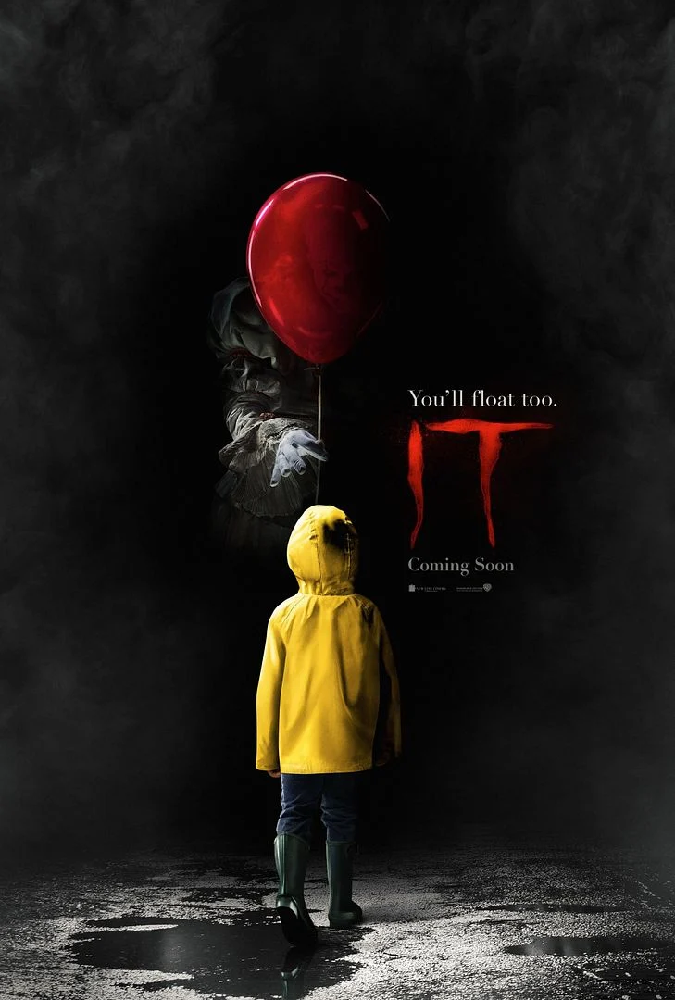
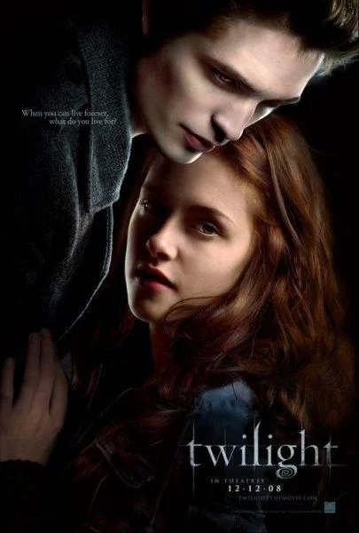
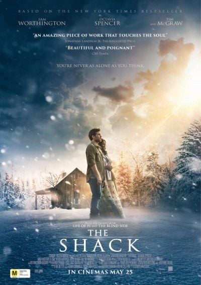

O filme é uma adaptação da obra literária de Jane Austen, uma renomada escritora inglesa.
A história se passa na Inglaterra no final do século XVIII e retrata a família Bennet, que é constituída por um casal e suas cinco filhas.
Lizzie, uma das filhas mais velhas foge de atender as expectativas da mãe em relação a ter como objetivo de vida um bom casamento.
Durante a trama, ela conhece o Sr. Darcy, um jovem orgulhoso e de primeira impressão um tanto esnobe, homem o qual ela nem cogitaria a possibilidade
de que viria a desenvolver sentimentos em relação a ela, e muito menos que essa afeição seria mútua.
IT - A Coisa

Ano de lançamento: 2017
Direção: Andy Muschietti
Na pequena cidade de Derry, no Maine, começam a ocorrer estranhos e misteriosos desaparecimentos de crianças. Nesse contexto, Bill acaba
perdendo seu irmão mais novo, George que desapareceu repentinamente quando foi brincar nas proximidades de um bueiro.
Então Bill e seus amigos Eddie, Richie, Mike, Ben, Stan e Beverly passam a presenciar surgimentos macabros de um palhaço
chamado Penywise, que faz com que seus maiores medos se tornem uma realidade apavorante.
Por esse motivo eles passam a investigar como deter Penywise e salvar a vida das crianças em Derry.
Crepúsculo

Ano de lançamento: 2008
Direção: Catherine Hardwicke
Bella Swan, uma garota introvertida, que vivia na ensolarada California com sua mãe e seu padastro, decide se mudar para a
chuvosa cidade de Forks para morar com seu pai, Charlie. Ao frequentar a escola nova ela conhece Edward Cullen, um rapaz misterioso
que convive com seus 4 irmãos e seus pais adotivos. Ao decorrer da história, eles acabam se apaixonando, porém Edward guarda um segredo
que pode por a vida da jovem em risco.
Além disso, Bella reencontra seu antigo amigo Jacob Black, que também tem sentimentos em relação a garota.
A Cabana

Ano de lançamento: 2017
Direção: Stuart Hazeldine
Mack, após o desaparecimento de sua filha mais nova, Missy, vive com um constante sentimento de culpa por acreditar que
deveria ter cuidado melhor da criança para evitar seu desaparecimento. Certo dia, ele recebe um chamado misterioso que o convida para visitar
uma cabana. Lá ele tem uma experiência espiritual de encontrar Deus e mais alguns espíritos que desejam ajudá-lo a retomar sua fé
e perdoar o responsável pelo desaparecimento de Missy, que infelizmente já estava morta.
Com isso Deus ajuda Mack a reencontrar sua paz interior através da espiritualidade.